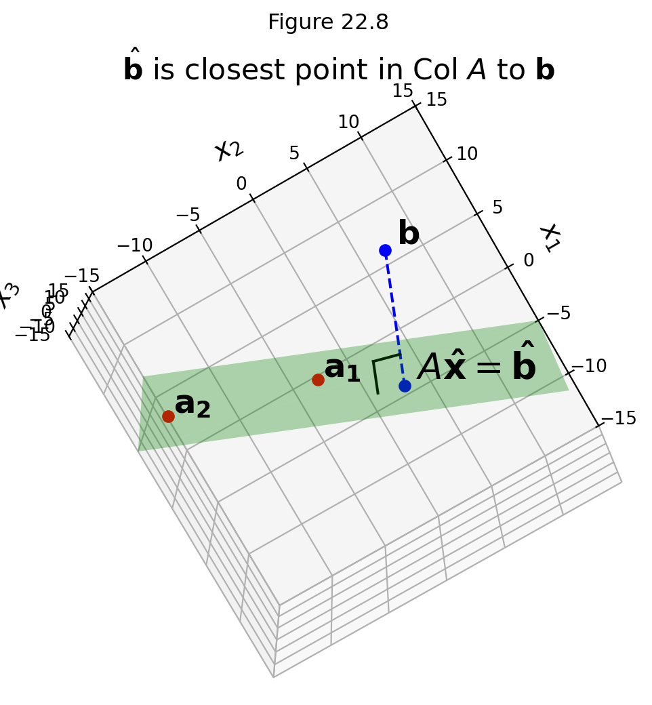

Least Squares
Ceres image credit: https://commons.wikimedia.org/wiki/File:Ceres_-RC3-Haulani_Crater(22381131691)_(cropped).jpg
Good additional reading on Gauss’s use of Least Squares and determination of the orbit of Ceres is here.

_(cropped).jpg)
Let’s go back to week 1. A long time ago!
Recall Gauss’s remarkable accomplishment in his early 20s. He took the set of measurements made by Piazzi of the dwarf planet Ceres and predicted where Ceres subsequently would appear in the sky (after it was lost behind the sun). This told Olbers exactly where to look, and lo and behold . . .
We can understand now a little better what Gauss had to do.
Kepler had discovered, and Newton had explained, that each planet orbits the sun following the path of an ellipse.
To describe the orbit of Ceres, Gauss had to construct the equation for its ellipse:
\[a_1 x_1^2 + a_2 x_2^2 + a_3 x_1x_2 + a_4 x_1 + a_5 x_2 + a_6 = 0.\]
He had many measurements of \((x_1, x_2)\) pairs and had to find the \(a_1, \dots, a_6.\)
This is actually a linear system:
\[\begin{bmatrix}x_{11}^2 &x_{21}^2&x_{11}x_{21}&x_{11}&x_{21}&1\\x_{12}^2 &x_{22}^2&x_{12}x_{22}&x_{12}&x_{22}&1\\ \vdots&\vdots&\vdots&\vdots&\vdots&\vdots\\x_{1n}^2 &x_{2n}^2&x_{1n}x_{2n}&x_{1n}&x_{2n}&1\end{bmatrix} \begin{bmatrix}a_1\\a_2\\a_3\\a_4\\a_5\\a_6\end{bmatrix} = \mathbf{0}\]
Now, according to Newton, this is a consistent linear system.
The equation for the ellipse is exactly correct and all we need is six \((x_1, x_2)\) sets of measurements to know the orbit of Ceres exactly.
What could go wrong? :)
Obviously, there are going to be measurement errors in Piazzi’s observations.
If we just solve the system using six measurements, we will probably get incorrect values for the coefficients \(a_1, \dots, a_6.\)
When an Inconsistent System is Better than a Consistent System
Notice that each time Piazzi takes a measurement of the position of Ceres, we add an additional equation to our linear system.
Just using six measurements will certainly result in incorrect coefficients due to measurement error.
A better idea is to use all of the \(n\) measurement data available, and try to find a way to cancel out errors.
So, using all the \(n\) data measurements available, we construct a linear system:
\[ X\mathbf{a} = \mathbf{b}\]
where \(X\) is \(n\times 6\) and \(\mathbf{b} \in \mathbb{R}^n\).
But now, due to measurement errors, we can’t expect \(\mathbf{b}\) will lie in the column space of \(X.\) We have an inconsistent system.
This system has no solutions!
What can we do if \(A\mathbf{x} = \mathbf{b}\) has no solutions?
Here is the key idea: the fact that our measurements include errors does not make our measurements worthless!
We simply need a principled approach to doing the best job we can given the errors in our measurements.
Let’s see how we can do that.
We now understand if \(A\) is \(m\times n\) and \(A\mathbf{x} = \mathbf{b}\) has no solutions, that is because
- the columns of \(A\) do not span \(\mathbb{R}^m\), and
- \(\mathbf{b}\) is not in the column space of \(A\).
Here is an example we can visualize, in which \(A\) is \(3 \times 2\):
For the problem of Ceres’ orbit, the reason that \(\mathbf{b}\) does not lie in \(\operatorname{Col} A\) is due to measurement error.
Finding a Good Approximate Solution
If we make the assumption that measurement errors are small, then we should be quite satisfied to find an \(\mathbf{x}\) that makes \(A\mathbf{x}\) as close as possible to \(\mathbf{b}.\)
In other words, we are looking for an \(\mathbf{x}\) such that \(A\mathbf{x}\) makes a good approximation to \(\mathbf{b}.\)
<>:31: SyntaxWarning: invalid escape sequence '\m'
<>:31: SyntaxWarning: invalid escape sequence '\m'
/var/folders/y0/f8_7klyx3sjbkw2pj03bnj040000gn/T/ipykernel_5591/1816056809.py:31: SyntaxWarning: invalid escape sequence '\m'
'We should be happy with an $\mathbf{x} such that AX is close to b', size = 16)We can think of the error of the approximation of \(A\mathbf{x}\) to \(\mathbf{b}\) as the distance from \(A\mathbf{x}\) to \(\mathbf{b},\) which is
\[\Vert A\mathbf{x} - \mathbf{b}\Vert.\]
<>:31: SyntaxWarning: invalid escape sequence '\m'
<>:31: SyntaxWarning: invalid escape sequence '\m'
/var/folders/y0/f8_7klyx3sjbkw2pj03bnj040000gn/T/ipykernel_5591/1816056809.py:31: SyntaxWarning: invalid escape sequence '\m'
'We should be happy with an $\mathbf{x} such that AX is close to b', size = 16)
The General Least-Squares Problem
We can now formally express what we are looking for when we seek a “good” solution to an inconsistent system:
The general least-squares problem is to find an \(\mathbf{x}\) that makes \(\Vert A\mathbf{x}-\mathbf{b}\Vert\) as small as possible.
This is called “least squares” because it is equivalent to minimizing \(\Vert A\mathbf{x}-\mathbf{b}\Vert^2,\) which is the sum of squared differences.
To make this correspondence explicit: say that we denote \(A\mathbf{x}\) by \(\mathbf{y}\). Then
\[\Vert A\mathbf{x}-\mathbf{b}\Vert^2 = \Vert \mathbf{y}-\mathbf{b}\Vert^2 = \sum_i (y_i-b_i)^2\]
Where we interpret \(y_i\) as the estimated value and \(b_i\) as the measured value.
So this expression is the sum of squared error.
This is the most common measure of error used in statistics.
This is a key principle!
Minimizing the length of \(A\mathbf{x} - \mathbf{b}\) is the same as minimizing the sum of squared error.
Definition. If A is \(m\times n\) and \(\mathbf{b}\) is in \(\mathbb{R}^m,\) a least squares solution of \(A\mathbf{x} =\mathbf{b}\) is an \(\mathbf{\hat{x}}\) in \(\mathbb{R}^n\) such that
\[\Vert A\mathbf{\hat{x}} - \mathbf{b}\Vert \leq \Vert A\mathbf{x} - \mathbf{b}\Vert\]
for all \(\mathbf{x}\) in \(\mathbb{R}^n\).
An equivalent (and more common) way to express this is:
\[\hat{\mathbf{x}} = \arg\min_\mathbf{x} \Vert A\mathbf{x} - \mathbf{b}\Vert.\]
which emphasizes that this is a minimization problem, also called an optimization problem.
Interpretation of the Least Squares Problem
The point here is that no matter what \(\mathbf{x}\) is, \(A\mathbf{x}\) will be in the column space of \(A\) — that is, \(\operatorname{Col}A\).
So in our problem,
- \(\mathbf{b}\) is outside \(\operatorname{Col}A\), and
- we are looking for \(\hat{\mathbf{x}}\),
- which specifies the closest point in \(\operatorname{Col}A\) to \(\mathbf{b}\).
The vector \(\mathbf{b}\) is closer to \(A\mathbf{\hat{x}}\) than it is to \(A\mathbf{x}\) for any other \(\mathbf{x}\).
For example, the red points in the figure are both further from \(\mathbf{b}\) than is \(A\mathbf{\hat{x}}\).
Solving the General Least Squares Problem
In order to solve the Least Squares problem, we need to bring in a bit more theory.
All we need to do is to extend some of the ideas we developed in the last lecture.
The last lecture developed methods for finding the point in a 1D subspace that is closest to a given point.
We need to generalize the idea of “closest point” to the case of an arbitrary subspace.
This leads to two theorems: the Orthogonal Decomposition Theorem and the Best Approximation Theorem.
The Orthogonal Decomposition Theorem
Let \(W\) be a subspace of \(\mathbb{R}^n\). Then each \(\mathbf{y}\) in \(\mathbb{R}^n\) can be written uniquely in the form
\[ \mathbf{y} = \hat{\mathbf{y}} + \mathbf{z}\]
where \(\hat{\mathbf{y}}\) is in \(W\) and \(\mathbf{z}\) is orthogonal to every vector in \(W\).

Proof. (straightforward extension of the 1D case from last lecture.)
Just as in the case of a 1D subspace (in the last lecture), we say that \(\hat{\mathbf{y}}\) is the orthogonal projection of \(\mathbf{y}\) onto \(W\) and write \(\hat{\mathbf{y}} = \operatorname{proj}_W\mathbf{y}.\)
The Best Approximation Theorem
Let \(W\) be a subspace of \(\mathbb{R}^n\), let \(\mathbf{y}\) be any vector in \(\mathbb{R}^n\), and let \(\hat{\mathbf{y}}\) be the orthogonal projection of \(\mathbf{y}\) onto \(W\). Then \(\hat{\mathbf{y}}\) is the closest point in \(W\) to \(\mathbf{y}\), in the sense that
\[\Vert \mathbf{y}-\hat{\mathbf{y}} \Vert < \Vert \mathbf{y} - \mathbf{v} \Vert\]
for all \(\mathbf{v}\) in \(W\) distinct from \(\hat{\mathbf{y}}\).
Proof.
Take \(\mathbf{v}\) in \(W\) distinct from \(\hat{\mathbf{y}}\). Here is what the setup looks like:

Both \(\hat{\mathbf{y}}\) and \(\mathbf{v}\) are in \(W\), so \(\hat{\mathbf{y}} - \mathbf{v}\) is in \(W\).
By the orthogonal decomposition theorem, \(\mathbf{y} - \hat{\mathbf{y}}\) is orthogonal to every vector in \(W\), so it is orthogonal to \(\hat{\mathbf{y}} - \mathbf{v}.\)
Now, these three points form a right triangle because
\[ \mathbf{y} - \mathbf{v} = (\mathbf{y} - \hat{\mathbf{y}}) + (\hat{\mathbf{y}} - \mathbf{v}). \]
So the Pythagorean Theorem tells us that
\[ \Vert\mathbf{y} - \mathbf{v}\Vert^2 = \Vert\mathbf{y} - \hat{\mathbf{y}}\Vert^2 + \Vert\hat{\mathbf{y}} - \mathbf{v}\Vert^2. \]
Now \(\hat{\mathbf{y}} - \mathbf{v} \neq {\bf 0}\) because \(\mathbf{y}\) is distinct from \(\mathbf{v}\).
So
\[\Vert \hat{\mathbf{y}} - \mathbf{v} \Vert > 0.\]
So
\[ \Vert\mathbf{y} - \mathbf{v}\Vert^2 > \Vert\mathbf{y} - \hat{\mathbf{y}}\Vert^2. \]
So we have shown a key fact:
\[ \operatorname{Proj}_W \mathbf{y} \text{ is the closest point in } W \text{ to } \mathbf{y}.\]
Orthogonal Projection Solves Least Squares
Let’s apply these ideas to solving the least squares problem.
Here is what we want to achieve:
\[\hat{\mathbf{x}} = \arg\min_\mathbf{x} \Vert A\mathbf{x} - \mathbf{b}\Vert.\]
That is, we want \(A\hat{\mathbf{x}}\) to be the closest point in \(\operatorname{Col}A\) to \(\mathbf{b}\).
… and we now know that the closest point to \(\mathbf{b}\) in a subspace \(W\) is the projection of \(\mathbf{b}\) onto \(W.\)
So the point we are looking for, which we’ll call \(\hat{\mathbf{b}},\) is:
\[\hat{\mathbf{b}} = \operatorname{proj}_{\operatorname{Col}A} \mathbf{b}\]
The key is that \(\hat{\mathbf{b}}\) is in the column space of \(A\). So this equation is consistent, and we can solve it:
\[A\mathbf{\hat{x}} = \hat{\mathbf{b}}.\]
Since \(\hat{\mathbf{b}}\) is the closest point in \(\operatorname{Col}A\) to \(\mathbf{b},\) a vector \(\hat{\mathbf{x}}\) is a least-squares solution of \(A\mathbf{x}=\mathbf{b}\) if and only if \(\mathbf{\hat{x}}\) satisfies \(A\mathbf{\hat{x}} = \hat{\mathbf{b}}.\)
Let’s go back to the case that we can visualize.
\(A\) is \(3 \times 2.\)
We have only two columns \(\mathbf{a}_1\) and \(\mathbf{a}_2\) so they cannot span \(\mathbb{R}^3\).
So \(\mathbf{b}\) may not lie in \(\operatorname{Col}A\), and in our example it does not:
And what we want to find is the projection of \(\mathbf{b}\) onto the column space of \(A\):

The Normal Equations
So: how are we going to find this projection \(\hat{\mathbf{b}}\)?
Here is the key idea:
We know that the projection \(\hat{\mathbf{b}}\) has the property that \(\hat{\mathbf{b}}-\mathbf{b}\) is orthogonal to \(\operatorname{Col}A.\)
Suppose \(\hat{\mathbf{b}}\) is \(\operatorname{proj}_{\operatorname{Col}A}\mathbf{b},\) and that \(\mathbf{\hat{x}}\) satisfies \(A\mathbf{\hat{x}} = \hat{\mathbf{b}}\).
So \(A\mathbf{\hat{x}} - \mathbf{b}\) is orthogonal to each column of \(A\).
If \(\mathbf{a}_j\) is any column of \(A\), then
\[\mathbf{a}_j^T(A\mathbf{\hat{x}} - \mathbf{b}) = 0.\]
Now, each \(\mathbf{a}_j^T\) is a row of \(A^T\).
We can collect all of the equations for all the \(\mathbf{a}_j\) as:
\[A^T(A\mathbf{\hat{x}} - \mathbf{b}) = {\bf 0}.\]
So
\[A^TA\mathbf{\hat{x}} - A^T\mathbf{b} = {\bf 0}\]
So
\[A^TA\mathbf{\hat{x}} = A^T\mathbf{b}\]
Looking at this, we see that \(A^T\mathbf{b}\) is a vector, and \(A^TA\) is a matrix, so this is a standard linear system.
This linear system is called the normal equations for \(A\mathbf{x} = \mathbf{b}.\)
Its solution is usually denoted \(\mathbf{\hat{x}}\).
Theorem. The set of least-squares solutions of \(A\mathbf{x} = \mathbf{b}\) is equal to the (nonempty) set of solutions of the normal equations \(A^TA\mathbf{x} = A^T\mathbf{b}.\)
Proof.
(1) The set of solutions is nonempty. The matrix on the left has the same column space as \(A^T\) and the vector on the right is a vector in the column space of \(A^T.\)
And, by the arguments above, any least-squares solution of \(A\mathbf{x} = \mathbf{b}\) must satisfy the normal equations \(A^TA\mathbf{x} = A^T\mathbf{b}.\)
(2) Now let’s show that any solution of \(A^TA\mathbf{x} = A^T\mathbf{b}\) is a least squares solution of \(A\mathbf{x} = \mathbf{b}\).
If \(\mathbf{\hat{x}}\) satisfies \(A^TA\mathbf{x} = A^T\mathbf{b},\) then \(A^T(A\mathbf{\hat{x}} -\mathbf{b}) = {\bf 0},\)
which shows that \(A\mathbf{\hat{x}} - \mathbf{b}\) is orthogonal to the rows of \(A^T,\) and so is orthogonal to the columns of \(A\).
So the vector \(A\mathbf{\hat{x}} - \mathbf{b}\) is orthogonal to \(\operatorname{Col}A\).
So the equation
\[\mathbf{b} = A\mathbf{\hat{x}} + (\mathbf{b} - A\mathbf{\hat{x}})\]
is a decomposition of \(\mathbf{b}\) into the sum of a vector in \(\operatorname{Col}A\) and a vector orthogonal to \(\operatorname{Col}A\).
Since the orthogonal decomposition is unique, \(A\mathbf{\hat{x}}\) must be the orthogonal projection of \(\mathbf{b}\) onto the column space of \(A\).
So \(A\mathbf{\hat{x}} = \hat{\mathbf{b}}\) and \(\mathbf{\hat{x}}\) is a least-squares solution.
Example. Find the least squares solution of the inconsistent system \(A\mathbf{x} = \mathbf{b}\) for
\[A = \begin{bmatrix}4&0\\0&2\\1&1\end{bmatrix}, \;\;\; \mathbf{b} = \begin{bmatrix}2\\0\\11\end{bmatrix}.\]
Solution.
We will use the normal equations \(A^TA\hat{\mathbf{x}} = A^T\mathbf{b}.\)
\[A^TA = \begin{bmatrix}4&0&1\\0&2&1\end{bmatrix} \begin{bmatrix}4&0\\0&2\\1&1\end{bmatrix} = \begin{bmatrix}17&1\\1&5\end{bmatrix}\]
\[A^T\mathbf{b} = \begin{bmatrix}4&0&1\\0&2&1\end{bmatrix} \begin{bmatrix}2\\0\\11\end{bmatrix} = \begin{bmatrix}19\\11\end{bmatrix}\]
So the normal equations are:
\[ \begin{bmatrix}17&1\\1&5\end{bmatrix}\begin{bmatrix}\hat{x}_1\\\hat{x}_2\end{bmatrix} = \begin{bmatrix}19\\11\end{bmatrix}\]
We can solve this using row operations, or by inverting \(A^TA\) (if it is invertible).
\[(A^TA)^{-1} = \frac{1}{84}\begin{bmatrix}5&-1\\-1&17\end{bmatrix}\]
Since \(A^TA\) is invertible, we can then solve \(A^TA\hat{\mathbf{x}} = A^T\mathbf{b}\) as
\[\mathbf{\hat{x}} = (A^TA)^{-1}A^T\mathbf{b}\]
\[ = \frac{1}{84}\begin{bmatrix}5&-1\\-1&17\end{bmatrix}\begin{bmatrix}19\\11\end{bmatrix} = \frac{1}{84}\begin{bmatrix}84\\168\end{bmatrix} = \begin{bmatrix}1\\2\end{bmatrix}.\]
So we conclude that \(\mathbf{\hat{x}} = \begin{bmatrix}1\\2\end{bmatrix}\) is the vector that minimizes \(\Vert A\mathbf{x} -\mathbf{b}\Vert.\)
More formally,
\[\mathbf{\hat{x}} = \arg\min_{\mathbf{x}} \Vert A\mathbf{x} - \mathbf{b}\Vert.\]
That is, \(\mathbf{\hat{x}}\) is the least-squares solution of \(A\mathbf{x} = \mathbf{b}\).
When the Normal Equations have Multiple Solutions
We have seen that the normal equations always have a solution.
Is there always a unique solution?
No, there can be multiple solutions that all minimize \(\Vert A\mathbf{x} - \mathbf{b}\Vert.\)
Let’s remind ourselves of what is going on when a linear system has multiple solutions.
We know that a linear system has multiple solutions when there are columns that are not pivot columns.
Equivalently, when \(A\hat{\mathbf{x}} = \hat{\mathbf{b}}\) has multiple solutions, the columns of \(A\) are linearly dependent.
Here is a picture of what is going on. In this case, \(A\) is \(3 \times 3\).
But note, that \(\operatorname{Col}A\) is only two-dimensional because the three columns are linearly dependent.
Example.
Find a least-squares solution for \(A\mathbf{x} = \mathbf{b}\) for
\[A = \begin{bmatrix}1&1&0&0\\1&1&0&0\\1&0&1&0\\1&0&1&0\\1&0&0&1\\1&0&0&1\end{bmatrix},\;\;\; \mathbf{b} = \begin{bmatrix}-3\\-1\\0\\2\\5\\1\end{bmatrix}.\]
Solution. Compute
\[A^TA = \begin{bmatrix}1&1&1&1&1&1\\1&1&0&0&0&0\\0&0&1&1&0&0\\0&0&0&0&1&1\end{bmatrix}\begin{bmatrix}1&1&0&0\\1&1&0&0\\1&0&1&0\\1&0&1&0\\1&0&0&1\\1&0&0&1\end{bmatrix} = \begin{bmatrix}6&2&2&2\\2&2&0&0\\2&0&2&0\\2&0&0&2\end{bmatrix}\]
\[A^T\mathbf{b} = \begin{bmatrix}1&1&1&1&1&1\\1&1&0&0&0&0\\0&0&1&1&0&0\\0&0&0&0&1&1\end{bmatrix}\begin{bmatrix}-3\\-1\\0\\2\\5\\1\end{bmatrix} = \begin{bmatrix}4\\-4\\2\\6\end{bmatrix}\]
To solve \(A^TA\hat{\mathbf{x}} = A^T\mathbf{b},\) we’ll use row reduction. The augmented matrix \([A^TA\; A^T\mathbf{b}]\) is:
\[\begin{bmatrix}6&2&2&2&4\\2&2&0&0&-4\\2&0&2&0&2\\2&0&0&2&6\end{bmatrix} \sim \begin{bmatrix}1&0&0&1&3\\0&1&0&-1&-5\\0&0&1&-1&-2\\0&0&0&0&0\end{bmatrix}\]
Since there is a column without a pivot, we know the columns of \(A^TA\) are linearly dependent.
This happens because the columns of \(A\) are linearly dependent.
You can see this as follows: if \(A\) has a non-trivial null space, then \(A^TA\) also has a nontrival null space.
So there is a free variable.
The general solution is then \(x_1 = 3-x_4\), \(x_2 = -5+x_4\), \(x_3 = -2 + x_4\), and \(x_4\) is free.
So the general least-squares solution of \(A\hat{\mathbf{x}} = \mathbf{b}\) has the form
\[\mathbf{\hat{x}} = \begin{bmatrix}3\\-5\\-2\\0\end{bmatrix} + x_4\begin{bmatrix}-1\\1\\1\\1\end{bmatrix}\]
Keep in mind that the orthogonal projection \(\hat{\mathbf{b}}\) is always unique.
The reason that there are multiple solutions to this least squares problem is that there are multiple ways to construct \(\hat{\mathbf{b}}\).
The reason that there are multiple ways to construct \(\hat{\mathbf{b}}\) is that the columns of \(A\) are linearly dependent, so any vector in the column space of \(A\) can be constructed in multiple ways.
Here is a theorem that allows use to identify when there are multiple least-squares solutions.
Theorem. Let \(A\) be an \(m\times n\) matrix. The following statements are equivalent:
1. The equation \(A\mathbf{x} = \mathbf{b}\) has a unique least-squares solution for each \(\mathbf{b}\) in \(\mathbb{R}^m.\)
2. The columns of \(A\) are linearly independent.
3. The matrix \(A^TA\) is invertible.
When these statements are true, the least-squares solution \(\mathbf{\hat{x}}\) is given by:
\[\mathbf{\hat{x}} = (A^TA)^{-1}A^T\mathbf{b}\]
Projection onto an Abitrary Basis
When \(A^TA\) is invertible, and \(\hat{\mathbf{b}}\) is unique, we can put together the two equations
\[\mathbf{\hat{x}} = (A^TA)^{-1}A^T\mathbf{b}\]
and
\[A\mathbf{\hat{x}} = \hat{\mathbf{b}}\]
to get:
\[\hat{\mathbf{b}} = A(A^TA)^{-1}A^T\mathbf{b}\]
Let’s stop and look at this from a very general standpoint.
Consider \(\mathbf{b}\) to be an arbitrary point, and \(A\) to be a matrix whose columns are a basis for a subspace (ie, \(\operatorname{Col} A\)).
Then \(\hat{\mathbf{b}}\) is the projection of \(\mathbf{b}\) onto \(\operatorname{Col} A\).
Up until now we have seen how to project a point onto a line, or on to a subspace with an orthogonal basis.
But now we see that
\[ \operatorname{proj}_{\operatorname{Col} A} \mathbf{b} = A(A^TA)^{-1}A^T\mathbf{b} \]
So we now have an expression for projection onto a subspace given an arbitrary basis. This is a general formula that can be very useful!